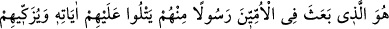

dostları olduğu yolundaki iddiâlarını açıklamakla devam etmiş; zikir, duâ, hamd, tesbih
ve benzeri hususları kapsayan hutbe dinlemeyi terk etmenin doğru olmadığını
bildirmekle son bulmuştur.
Necmüddin Kübrâ’nın Tevilât’ında âyetin tefsiri konusunda şöyle denilmektedir:
Allah’ın mukaddes zâtını, göklerde halkın anlayabildiği bütün mefhûmlar (anlaşılanlar),
hâssın anladığı bütün mefhûmlar (anlaşılanlar) ve havâssın üzerindeki havâssın anladığı
bütün mefhûmlar (anlaşılanlar) ile yerde avâmın, havâssın ve havâssu’l-havâssın
bilebildikleri bütün bilinenler tenzih ederler, demektir.
Göklerdeki varlıkları mefhûmlar (anlaşılanlar), yerdekileri de “bilinenler” kavramı
ile ifâde edişimiz, anlamanın, bilmenin üzerinde ve daha önemli olduğu içindir.
Nitekim, “Böylece bunu (bu fetvâyı) Süleyman’a biz anlatmıştık. Biz onların her
birine (hükümdarlık, peygamberlik) ve ilim verdik” (el-Enbiyâ’, 21/79)
buyrulmuştur. Süleyman (a.s.)’ın bu özel meselenin hakikatini ilim gücü sayesinde değil,
anlama nurunun aydınlığı sayesinde bulmuş olması da anlamanın ilimden derece
bakımından önemli olduğunu göstermektedir. O, anlayabilme nurunun giysisiyle
dilediğini aziz ve güçlü kılan “Aziz”, ilim elbisesi giydirmek sûretiyle dilediğini
hikmetiyle şereflendiren “Hakîm”dir.
2. Çünkü ümmîlere içlerinden, kendilerine âyetlerini okuyan, onları temizleyen,
onlara Kitab’ı ve hikmeti öğreten bir peygamber gönderen O’dur. Kuşkusuz onlar
önceden apaçık bir sapıklık içindeydiler.
“Çünkü ümmîlere içlerinden, kendilerine âyetlerini okuyan, onları temizleyen,
onlara Kitab’ı ve hikmeti öğreten bir peygamber gönderen O’dur.” Âyette geçen
“ümmî” kelimesi arab ümmetine mensub, arablardan olan demektir. Arablar iki kısma
ayrılırlar; Adnan neslinden olup, a) İsmail (a.s.)’a kadar varan Hicaz bölgesi arapları;
b) Kahtan’a varan Yemen arabları. Her iki kolun da bir çok kabileleri vardır. Tefsir
âlimlerine göre yaygın olan “ümmî” kelimesi, okuma-yazması olmayan kimse demektir.
Fıkıh âlimlerine göre Kur’an’dan hiç bir şey bilmeyen kimse demektir. Ümmî,
insanlarla temas hâlinde iken zorunlu olarak öğrendikleri ve annesinden öğrendiği ile
kalan kimse gibidir.
Ümmî Peygamber ise, âdetleri üzere yazma bilmeyen ümmete mensub olan Nebî
demektir. Âmmenin âdeti üzerine söylenmiş olduğu için “âmiyane tâbirle” denir. Bu da
bunun gibidir. Ayrıca, “Ümmi Peygamber” adını almasının sebebinin, bir kitaptan
okumayan, yazma bilmeyen anlamına geldiği de söylenmiştir. Hz. Peygamber, ezberine